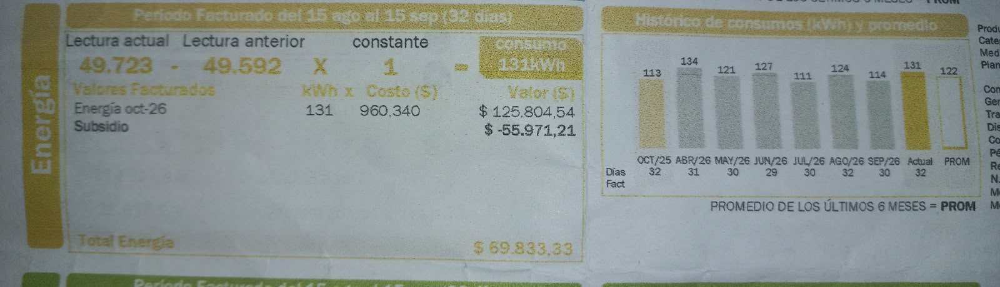

Comparativa del consumo de la factura personal con el consumo de los equipos del hogar
Aunque el consumo de Energia en la tabla de los equipos es un promedio estimado, podernos dar una idea de cuales son los equipos que mas consumen semanalmente, cual es el que mas se utiliza y que costos en la factura representan.
Factura de Energia Septiembre 2026

El costo del Kwh que se aplico para el mes de septiembre fue de 960 COP algo muy similar al que muestra la imagen de la grafica de XM donde el precio del Kwh era de 942 COP, el precio mas alto del año por lo que se aplicaria para las facturas del mes de septiembre.
Tabla de Consumo del hogar X Mes del 2026
| Mes | Kwh | Costo aprox. |
|---|---|---|
| Octubre (2025) | 113 | 100.078,45 |
| Abril | 134 | 36.046 |
| Mayo | 121 | 61.105 |
| Junio | 127 | 74.802 |
| Julio | 111 | 87.690 |
| Agosto | 124 | 116.808 |
| Septiembre | 114 | 77.178 |
| Actual | 131 | 125.804,54 |
Comparación del gasto del consumo promedio semanal vs el consumo total de Kwh en la factura
En la tabla de equipos podemos observar que el total de esos 4 elecctrodomesticos consumen alrededor de 51.66 kWh promedio por semana. Poniendo un gasto energetico elevado. Pero si observamos bien en la factura este costo no es tan elevado. Se puede observar que el consumo de energia se promedia. Pueden haber semanas que es muy inferior a ese valor que Tenemos como referencia en la tabla. En cambio, si tomamos como referencia el el consumo semanal 51.66 kWh por semana, entre las 4 semanas del Mes sumaria un consumo total de 206,64 Kwh, algo muy desproporcionado. Yo sugeria que el consumo de cada electrodomestico depende tambien de los modos de ahorro de energetico que trae cada electrodomestico.
Consejos para ahorrar en consumo de Energia para mi hogar
Si bien el agua actual mente es un recurso que viene escaseando en los por la falta de lluvia, es necesario tener en cuenta que este recurso se utiliza para generar energia. Por eso deacuerdo a mis datos hago los siguientes recomendaciones:
- Solo utilizar la lavadora hasta el nivel de agua que queda arraz del nivel de la ropa.
- Ya que el agua del último ciclo de la lavadora sale muy limpia, se puede utilizar esa agua en otras areas: como para regar las plantas, limpiar tennis, limpiar los vidrios de las ventanas o enjuagar algun vehiculo. Esto con el objetivo de disminuir el desperdicio de agua para evitar racionamientos en la ciudad y poder lograr en comunidad el control del precio del kwh generado por los embalses.
- Aumentar los grados de la nevera si no se tiene mucha comida. Esto con el fin de que la nevera en temperaturas muy bajas no tenga que consumir tanta energia si no tiene mucha comidad, esto debido a que la nevera permanece conectada a la energia 24/7.